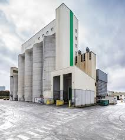

Alternance d'un an en atelier de découpe de viandes de porc à destination d'usines pour transformations :
Rédaction de fiches techniques regroupant les spécifications de découpes des produits présents à l'atelier et du conditionement
de ces produits.

Stage de 10 semaines à la coopérative Le Gouessant
Amelioration et optimisation de l'utilisation de détecteurs de métaux dans un atelier de
transformations de pommes de terre à destination de la restauration hors-domicile ou autre industriels.